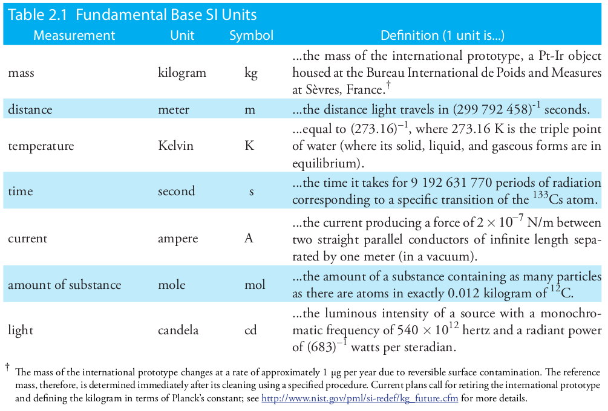
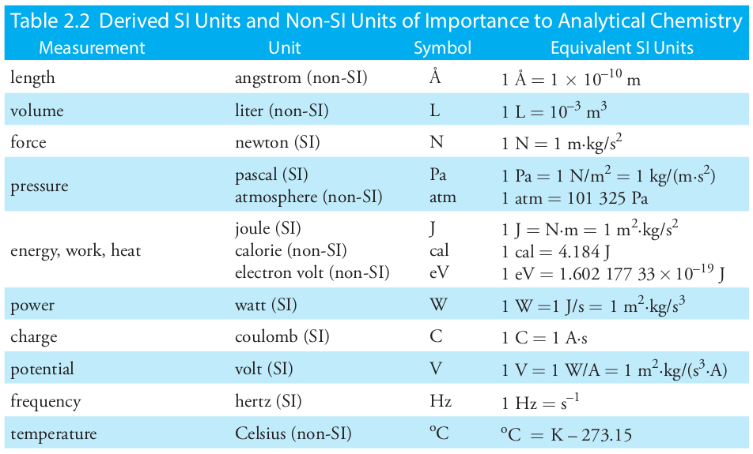
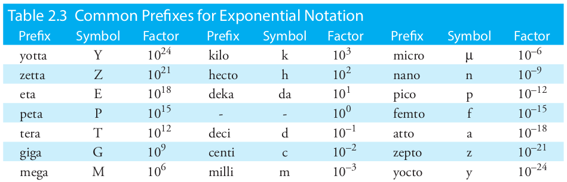
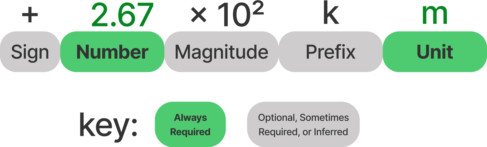
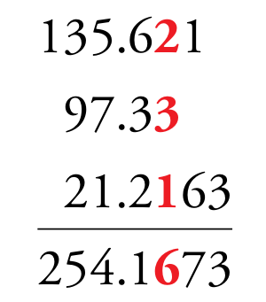
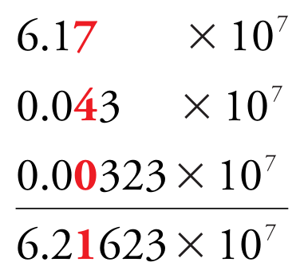
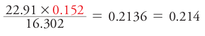

layout: true .footer[ - <div class="tooltip"><a href="/"><i class="fas fa-home"></i></a> <span class="tooltiptext">Go to C370 Main Page</span></div> - <div class="tooltip"><a href="/lecture-slides"><i class="fas fa-chalkboard-teacher"></i></a><span class="tooltiptext">Go to Lecture List</span></div> - <div class="tooltip"><i class="fas fa-question"></i><span class="tooltiptext">Press <kbd>Shift</Kbd> + <kbd>?</kbd> for Navigation Tips!</span></div> ] --- class: center <!-- <h2 style = "text-align: left; font-weight: bold; margin-left: 40px; font-size: 54px; margin-top: 10px;">Environmental applications of ultratrace spectroscopy</h2> --> <!-- <h2 style = "text-align: left; font-weight: bold; margin-left: 40px; font-size: 54px; margin-top: 10px;">Ultratrace Spectroscopy for Environmental Analysis</h2> --> <h2 style = "text-align: left; font-weight: bold; margin-left: 40px; font-size: 54px; margin-top: 50px;">Units and Significant Digits</h2> <!-- <h3 style = "text-align: left; font-weight: thin; margin-left: 40px; font-size: 48px;">Al Fischer, PhD</h3> --> <img src="https://upload.wikimedia.org/wikipedia/en/thumb/3/3c/SI_Illustration_Base_Units_and_Constants_Colour_Full.svg/600px-SI_Illustration_Base_Units_and_Constants_Colour_Full.svg.png" style = "height:450px; margin-left: auto; margin-right: auto; display: block;"> .image-credit[Public Domain [image](https://en.wikipedia.org/wiki/File:SI_Illustration_Base_Units_and_Constants_Colour_Full.svg).] --- # What is a 'kilogram'? --- class: center <iframe width="560" height="315" style = "margin-top: 100px" src="https://www.youtube.com/embed/wrgjEuuG2G8" title="YouTube video player" frameborder="0" allow="accelerometer; autoplay; clipboard-write; encrypted-media; gyroscope; picture-in-picture" allowfullscreen></iframe> --- class: center # Fundamental Base SI Units All SI Units can be traced back to the fundamental base SI units.  .image-credit[David Harvey / [Analytical Chemistry 2.1](https://chem.libretexts.org/Bookshelves/Analytical_Chemistry/Book%3A_Analytical_Chemistry_2.1_%28Harvey%29) / [CC BY-SA 4.0](https://creativecommons.org/licenses/by-sa/3.0/at/deed.en)] --- # Common Derived SI Units # & Non-SI Units  .image-credit[David Harvey / [Analytical Chemistry 2.1](https://chem.libretexts.org/Bookshelves/Analytical_Chemistry/Book%3A_Analytical_Chemistry_2.1_%28Harvey%29) / [CC BY-SA 4.0](https://creativecommons.org/licenses/by-sa/3.0/at/deed.en)] --- class: center # Modifying Units: Prefixes  .image-credit[David Harvey / [Analytical Chemistry 2.1](https://chem.libretexts.org/Bookshelves/Analytical_Chemistry/Book%3A_Analytical_Chemistry_2.1_%28Harvey%29) / [CC BY-SA 4.0](https://creativecommons.org/licenses/by-sa/3.0/at/deed.en)] --- class: center # Dimensional Analysis Most calculations can be solved using *dimensional analysis*. Use conversions as needed to multiply until the correct value is obtained. **A** ***value*** **is made up of:**  .image-credit[David Harvey / [Analytical Chemistry 2.1](https://chem.libretexts.org/Bookshelves/Analytical_Chemistry/Book%3A_Analytical_Chemistry_2.1_%28Harvey%29) / [CC BY-SA 4.0](https://creativecommons.org/licenses/by-sa/3.0/at/deed.en)] --- # Significant Digits - Addition and Subtraction: round to common decimal place   .image-credit[David Harvey / [Analytical Chemistry 2.1](https://chem.libretexts.org/Bookshelves/Analytical_Chemistry/Book%3A_Analytical_Chemistry_2.1_%28Harvey%29) / [CC BY-SA 4.0](https://creativecommons.org/licenses/by-sa/3.0/at/deed.en)] - Multiplication and Division: round to least number of significant digits  - Note these are general rules that *usually* work! <!-- =============================================================================== -->